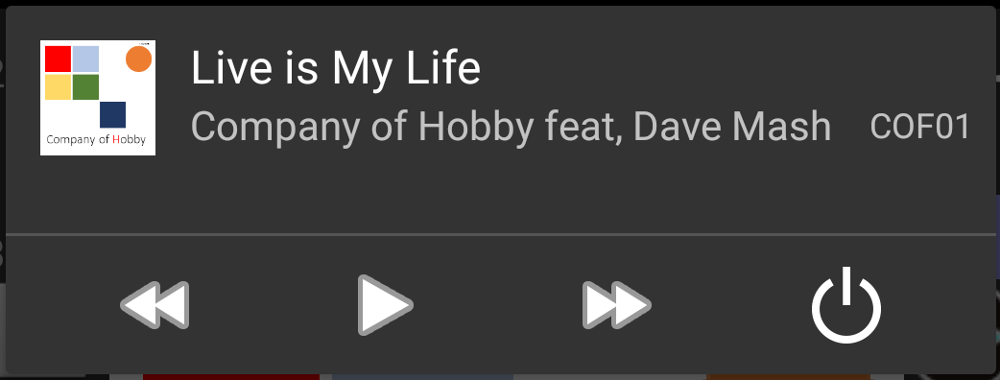
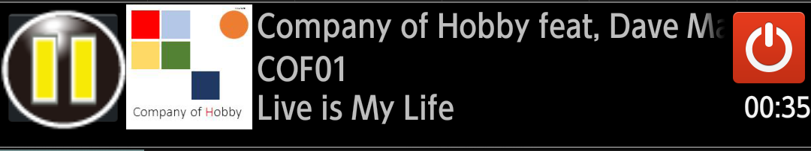

|
Music player usable commonly MaraSongs |
|
| notification player | ||
|
When I close a player screen and start list operation and other application,
I display the player who can finish reproduction / stop and the player in the information indication area of the top with the antenna PICT. This player "does not use / to use notification player" for in the "adjustment group according to the model" of "the setting" and can choose use / mint condition. *About the same interface is displayed on lock screen from Android5.x. |
||
Screen constitution |
After Android5  |
Before Android4.4  |
|
| Reproduction / stop button |
It is a function same as the button of the design of the player screen.
|
||
|
Forwarding / return button (After Android5) |
It is a function same as the button of the design of the player screen.
|
||
| Album art | I display an image set in a file. | ||
| Music information |
I display an artist name and an album name performed credit of under the title of the music. It is the same as indication of the Blutooth connection including the car audio system with an artist, an album name, a title from the top before Android4.4. |
||
| Qite button |
I perform the end of the player with this button I intended to finish music reproduction, and, please stop it from here if you do not seem to be completely finished. ・Because the end from notification is a function not to watch an example elsewhere, possibly there may be deficiency. For example, I repeat reboot, and, please reboot terminal in itself when movement becomes unstable. | ||
| I display it at reproduction time |
It is the simple indication using the chronometer. The reproduction time for player screen is the value that read the timeline in the file, but a gap produces it with the reproduction point in the file because it is automatic adder to start in a timing to draw ノティフィケーションエリア here ・Please use it in the aim of working to the last. Please use it in the aim of working to the last. |
||
I display a player screen if I tap it anything other than a button.